Everyone knows Pune is getting hotter. But the max-temperature chart barely moved. The real story is in the nights — the hours your body needs to recover. In 1990, Pune offered nearly 3.8 hrs of sleep-cool every night. By 2025, that window had collapsed to 1.5 hrs. This is what 37 years of ERA5 hourly data actually reveals.
Peak afternoon temperature gets all the headlines. But Pune's physiological heat burden has grown through three less-reported mechanisms — each backed by 37 years of hourly data.
A narrowing Diurnal Temperature Range means the city holds heat overnight. When nights don't cool, bodies never recover — a 24-hour cumulative stress that daytime-only metrics miss entirely.
Tmin rises at +0.055°C/yr vs +0.030°C/yr for Tmax. Nights have warmed nearly twice as fast. DTR has narrowed in the most critical shoulder months of April (***) and May (*).
Hot days (≥40°C) and warm nights (≥26°C) quantify when heat crosses into physiological stress — the thresholds where outdoor workers and vulnerable populations face acute risk.
In 1990–2000, Pune averaged 0–1 hot days per season. By 2022–2026, it averages 3–4 hot days and the hottest year (2026) saw 12 tropical nights — compared to 0 in the 1990s.
UTCI incorporates humidity, wind, and radiation. A city can feel significantly hotter without hitting higher dry-bulb temperatures — and the felt-like burden has grown disproportionately.
UTCI "Strong + Very Strong Heat Stress" now occupies 18–19% of pre-monsoon hours, up from ~9% in 1990. In 2026, "No Heat Stress" time shrank to just 48% of season hours.
Annual pre-monsoon Tmax and Tmin from 1990 to 2026, with Theil-Sen robust trend lines. Both are rising — but the night minimum trend is steeper, and statistically stronger.
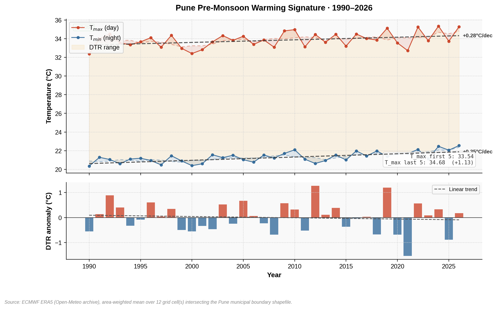
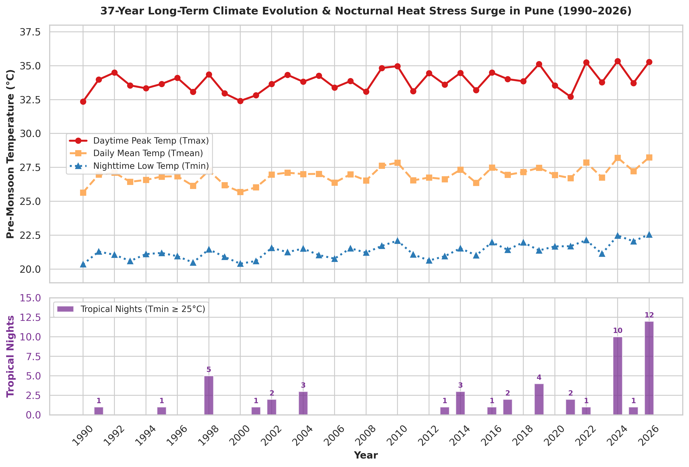
When nights warm faster than days, the body never resets. Two metrics tell this story most powerfully: the Diurnal Temperature Range (DTR), and the Sleep-Cool Window — hours per night below 22°C.
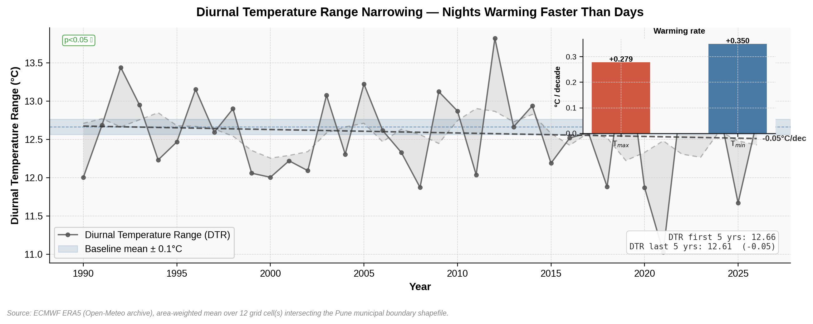
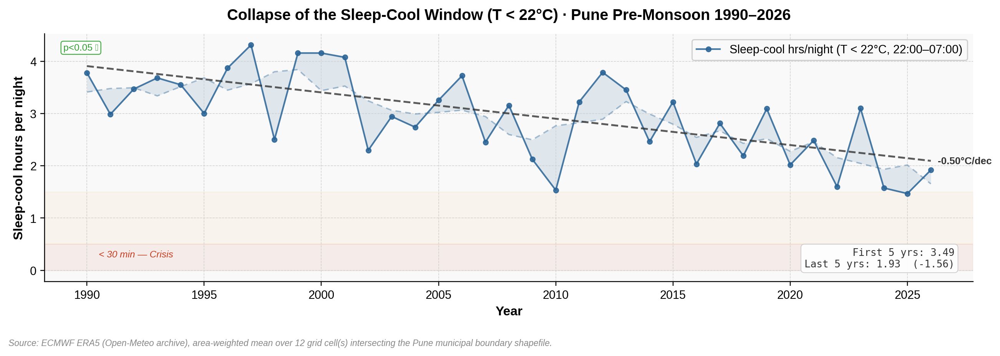
In the 1990s, a hot day (≥40°C) was a rarity — happening 0–1 times per season. By the 2020s, Pune expects 3–4. The definition of "unusual" has silently shifted.
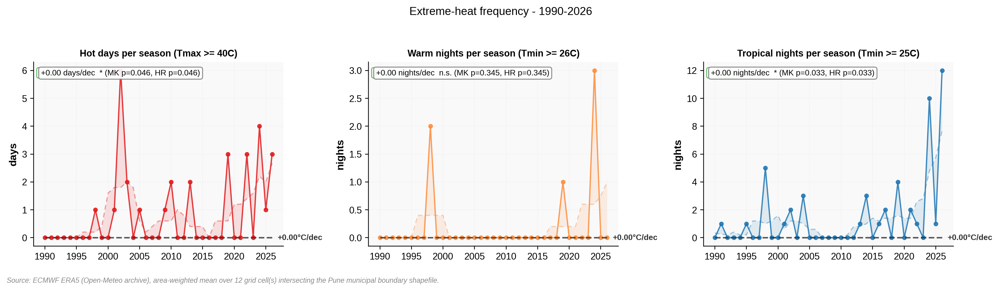
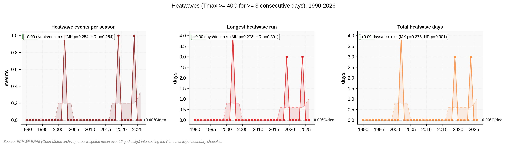
It's not just that it's hotter — the window of dangerous heat is longer. The first hot day of the year now arrives in mid-March rather than early April. School terms, construction schedules, and agricultural calendars haven't adapted.
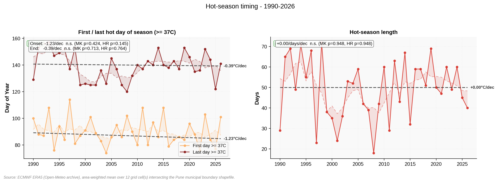
Dry-bulb temperature is what weather apps show. The Universal Thermal Climate Index (UTCI) models what your body actually feels — incorporating humidity, wind, and solar radiation. The felt shift is larger than the raw numbers suggest.
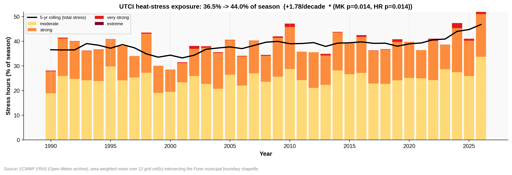
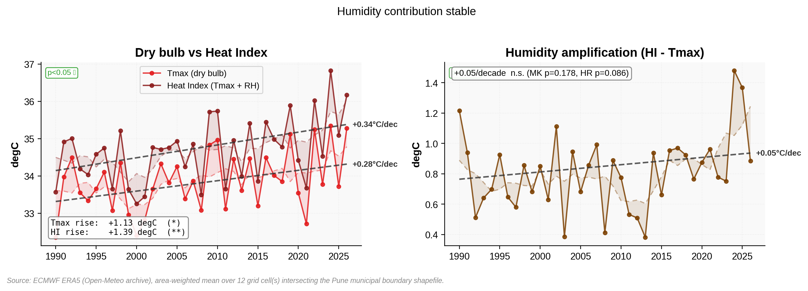
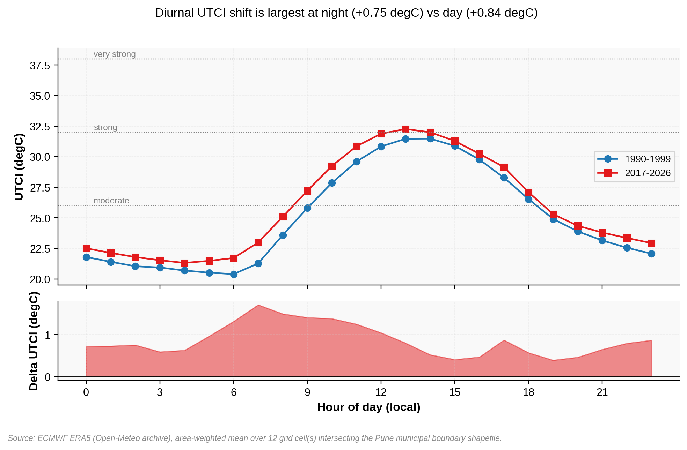
Trend lines tell you direction. The "anatomy of a day" tells you what it felt like to live in Pune in 1992 versus 2024 — hour by hour, threshold by threshold.
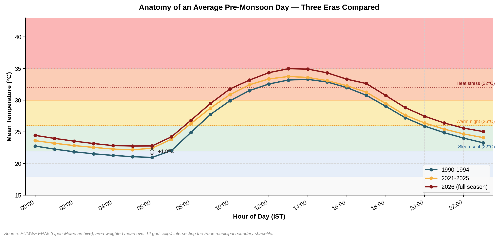
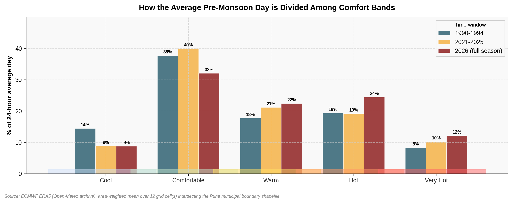
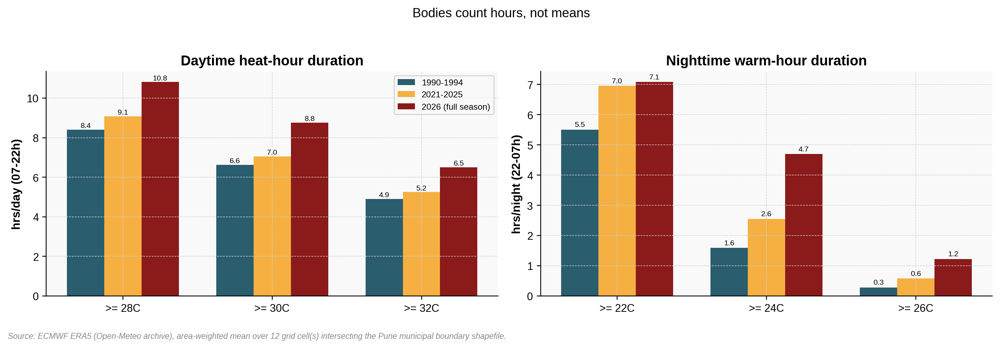
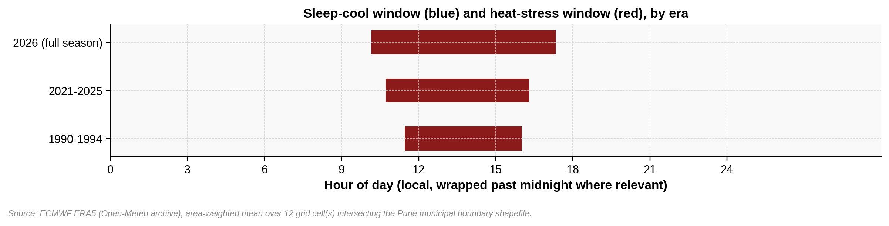
Pooling the whole pre-monsoon into one number hides whether the hottest month is getting worse, or whether shoulder months are catching up. The monthly trends tell a more complete story.
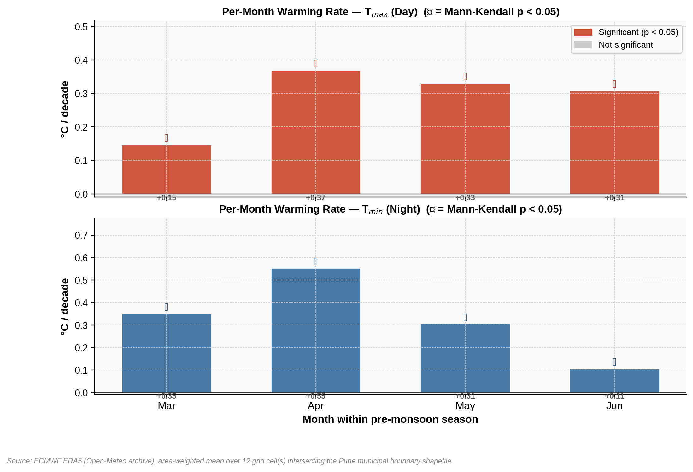
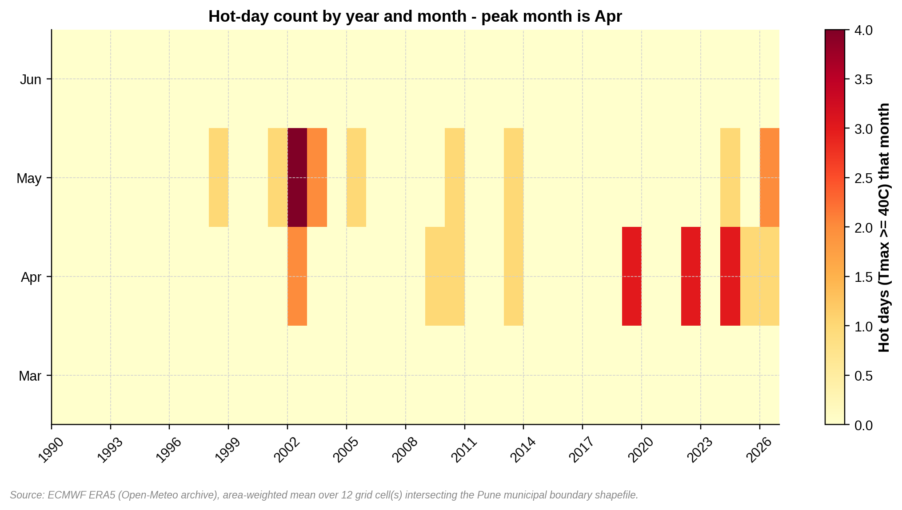
Beyond the trend, inter-annual variability tells us that bad years are becoming far more extreme. The gap between a "cool" and a "hot" pre-monsoon is widening — making planning, adaptation, and early warning systems harder.
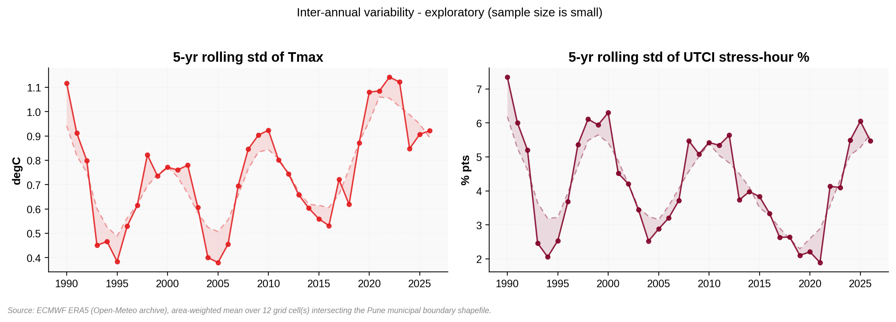
Climate data becomes meaningful when translated into lived experience. These are not abstract degree values — they represent real changes in how 3.5 million people experience their city.
The complete 37-year view — Tmax, Tmin, DTR, hot days, warm nights, heatwave duration — confirming that this is structural climate evolution, not statistical noise.
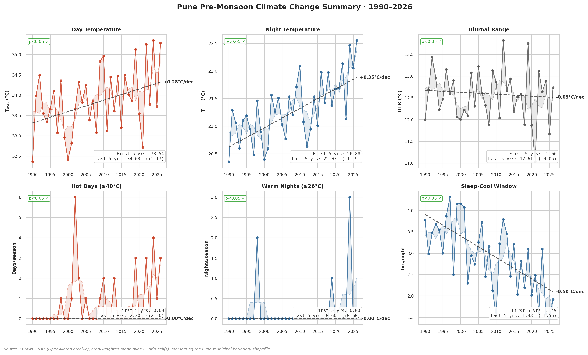
Open-Meteo ERA5 Historical Archive. Hourly temperature, dewpoint, wind speed for every ERA5 grid cell overlapping the Pune Municipal Corporation boundary. Open API — no key required. Period: 1990–2026.
Area-weighted mean over a 0.10° grid (~11 km spacing) of ERA5-Land cells intersecting the Pune city shapefile. Each cell weighted by its fractional overlap with the PMC boundary polygon.
Mann-Kendall non-parametric significance test (Hamed-Rao autocorrelation-corrected p-values) and Theil-Sen robust slope estimation. All trend lines shown are Sen slopes, not OLS regressions.
Universal Thermal Climate Index computed from T2m, dewpoint, wind speed, and a conservative shade approximation. Daytime UTCI underestimates solar-loaded outdoor environments — stated explicitly.
Hot day: ≥40°C Tmax. Warm night: ≥26°C Tmin. Tropical night: ≥26°C. Sleep-cool: <22°C T. Heatwave: ≥3 consecutive hot days. These are health-literature proxies, not IMD operational definitions.
Per-month Mann-Kendall tests reported as: *** (p<0.001), ** (p<0.01), * (p<0.05), n.s. (not significant). Month-level series are shorter than season-pooled — non-significant months do not contradict pooled significance.
All figures use the same area-weighted, QA-checked hourly series. Per-year completeness is computed before trend analysis; years below 95% coverage are flagged in Pune_DataCompleteness_1990_2026.csv. Figure 10 (variability) is exploratory — do not headline variability claims without cross-validation against longer records.
The monthly decomposition (Figs 15–16) reuses already-pulled data grouped by calendar month. The sleep-cool interactive chart uses the Pune_SleepCool_1990_2026 CSV directly. UTCI stacked chart uses Pune_UTCI_percent_1990_2026 CSV.